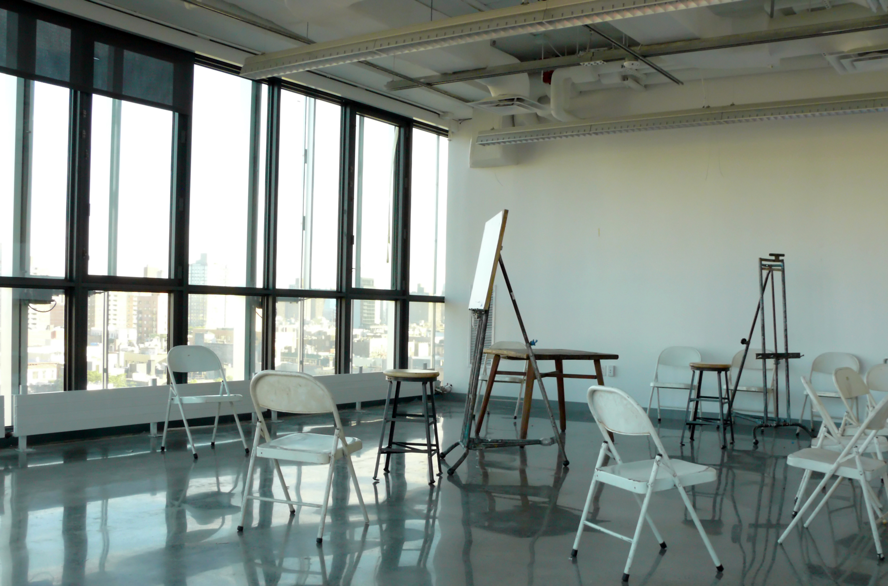
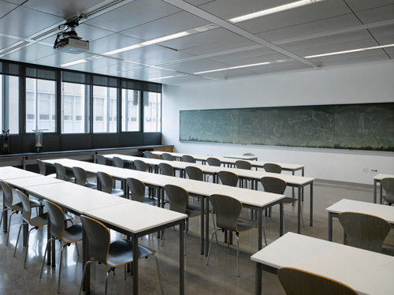

Air Side Economizer
Air Side Economizer

What is an air side economizer?An air side economizer is an innovative re-circulation system that allows treated air from non-laboratory spaces air to be recycled and used to ventilate laboratory spaces before being exhausted.This system is less wasteful than using an air handling unit which treats 100% outside air to ventilate these spaces. What kind of ventilation does 41CS use?41CS has a variety of spaces with different ventilation needs, from the lounge to classrooms, and from laboratory spaces to offices. The ventilation needs throughout the building are extensive and complex because of the wide variety of rooms in the building. How does the atrium help with ventilation?
41CS has a large central atrium around which many classrooms and labs are located. This open space running up the center of the building ventilates indoor space naturally so air-handling units (AHU's) can recycle treated air efficiently.
|
  |